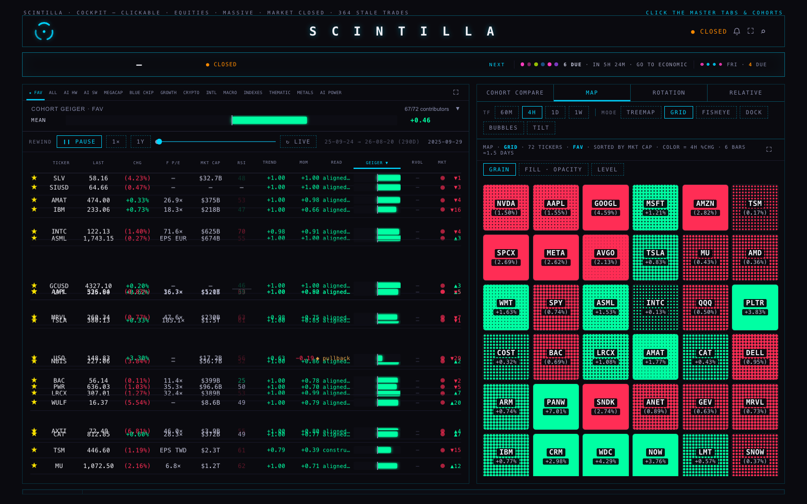
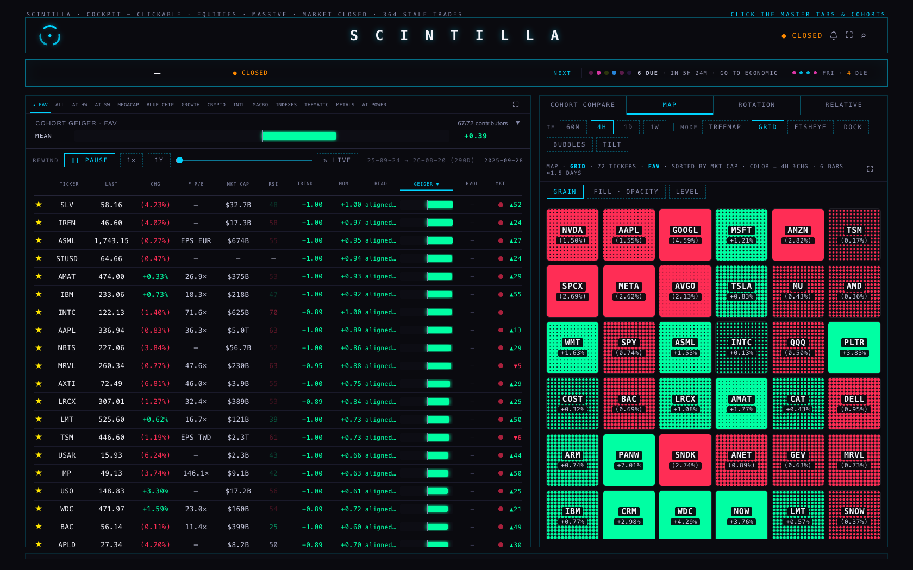
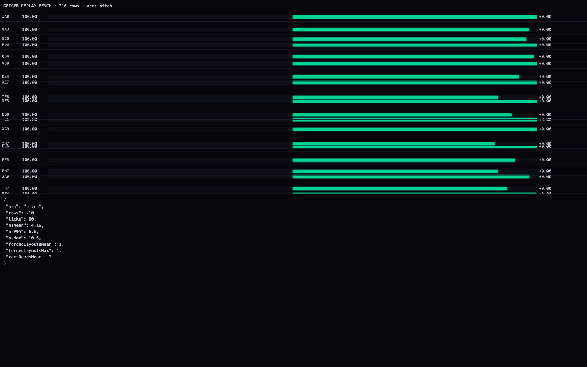
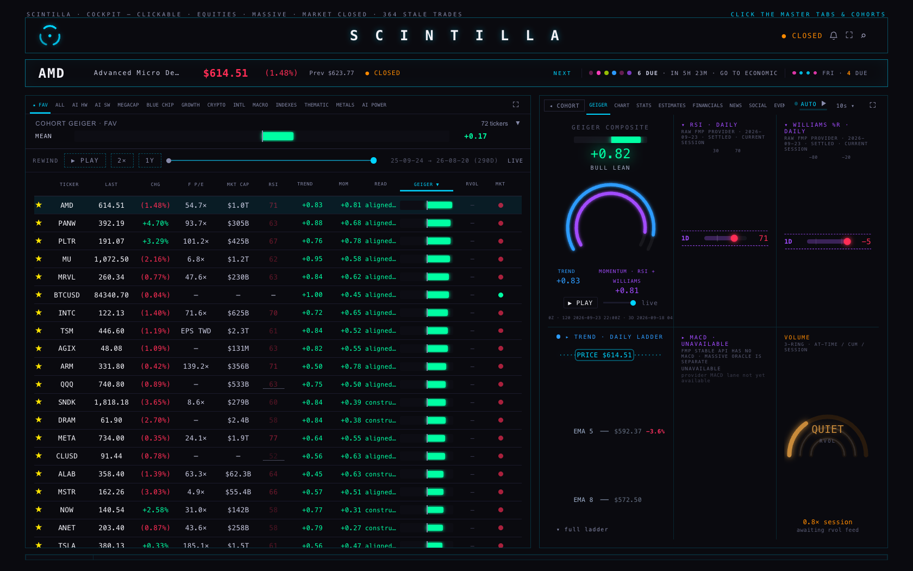
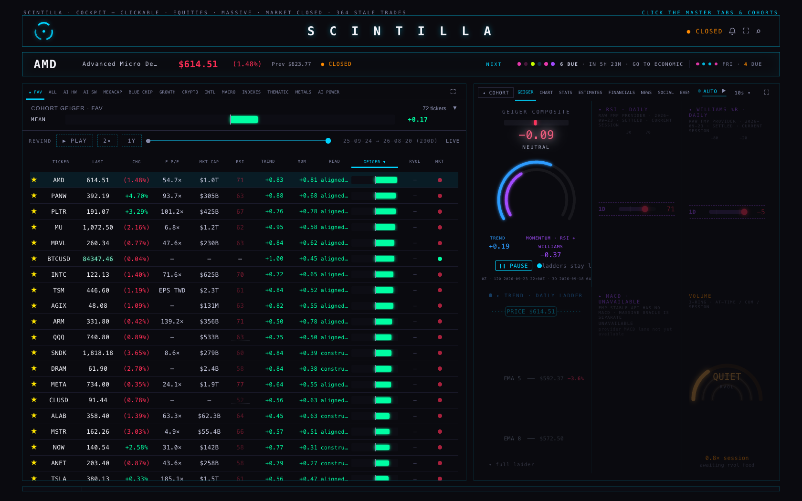

Two things were built. The board's rewind now re-orders the rows while it plays, smoothly, fast enough to hold a 364-row board. And the company Geiger tab — the one you said was garbage — plays that one name's Geiger over time, with its parts moving together.
Press PLAY on the rewind bar and the board walks forward one trading day at a time. Every row's Geiger bar follows that day's value, the Trend and Mom columns follow it, the cohort mean under the header follows it — and the rows re-order as they go, each one travelling to its new rank instead of jumping there. A small ▲3 / ▼5 badge on the right says how far a name moved.
Three things are new this round:


The old re-sort read a row's position, wrote its movement, then read the position again — inside the loop, once per row. On 364 rows that is 1,091 geometry reads in a single tick, and it is why the replay felt like it was sticking.
It now measures the row pitch once, works every position out from the row's place in the list, and reads geometry twice per tick no matter how many rows there are. Rows below the fold are still re-ordered; they are just not animated, because nobody can see them move.
| 364 rows, 60 ticks | ms per tick | p95 | geometry reads |
|---|---|---|---|
| the old way (shipped until today) | 18.44 | 24.3 | 1,091 |
| read all / write all | 12.98 | 14.9 | 729 |
| what ships now | 7.86 | 10.8 | 2 |
| 210 rows: 8.48 → 4.19 ms mean, reads 629 → 2 | |||
A screen refreshes every 16.7 ms. The old path used more than that at the 95th percentile, which is a dropped frame you can see; the new one has room to spare.
One honest correction to how this was measured. The brief asked for "layouts per tick". Chrome's own layout counter says 1 per tick in every version, old and new — because moving a row with a transform does not make the browser re-lay-out the page. The cost that was actually being paid, and is now gone, is the forced geometry reads in the table above. Reporting "layouts" as if they had fallen would have been a nicer number and a false one.

deliverables/20260924/geiger-replay/bench.html, 364 synthetic rows,
three code paths over the same rows and the same values. Run it yourself with ?rows=364.The numbers above are a bench. Driven through the actual Hub against live tables, a replay tick on
the 72-name FAV cohort costs 5.5–6.0 ms, makes 3 geometry reads, moves about 61 rows and
animates the ~23 that are on screen. The mode it reports is pitch, meaning the fast path
is the one being used.
Open a name, go to GEIGER, and there is now a small transport under the composite: PLAY, a scrubber, and the date it is showing. Play it and the whole tile moves together — the composite number and its bar, the words under it, and both rings, trend and momentum.


Four consecutive frames from that run, so you can see the parts move together rather than one number twitching:
| day | composite | trend | momentum |
|---|---|---|---|
| 2025-08-21 | −0.08 | +0.19 | −0.35 |
| 2025-08-25 | −0.09 | +0.19 | −0.37 |
| 2025-08-26 | +0.04 | +0.28 | −0.20 |
| 2025-08-27 | +0.06 | +0.28 | −0.17 |
When the replay reaches the end, the tile is repainted by the Hub's own builder from the live data it already holds. Measured: it comes back to exactly +0.82 / +0.83 / +0.81.
| what you see | where it comes from |
|---|---|
| Board Geiger bar while replaying | fan_daily.read (trend) and
momentum_daily.read (momentum) for that date, blended with the family weights from
operator_weights — the same blend the live Geiger uses. |
| Trend / Mom columns | the same two rows, shown as numbers. |
| A name with no reading for that day | drops out and renders "—". It does not keep its live value, because ranking today's number inside a March board is how a name ends up ranked against last spring. |
| Company tile rings, bar, number | the same two tables, read once for the whole window when you open the name — so playing it makes no further requests. |
| A day with no momentum row | plays trend alone and says "trend only · no momentum that day". |
| The ladders and RSI / Williams tiles | Live FMP provider values. They have no per-day history in that shape, so while the tile is playing they are dimmed and the strip says "ladders stay live" — rather than showing an August Geiger beside today's RSI as if they were the same day. |
hub/geiger-replay-20260924 from
9d50795.prototypes/indicator-lab/, the other rooms, or the X pane work
another lane is doing this week.